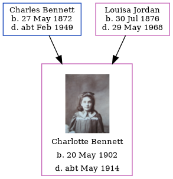

Margaret Elizabeth Bennett 1909 - 2002
[ Home ] | [ Calendar ] | [ Surnames Index ] | [ Census Index ] | [ Family History ]A managers dyer & cleaning and the youngest of 4 children of Charles Bennett (a brewer's drayman) and Louisa Jordan, Margaret Bennett, the third cousin once-removed on the mother's side of Nigel Horne, was born in Canterbury, Kent, England on Jun 1, 19091,2,3 and baptized there at St Mildred on Jul 18, 1909.
During her life, she was living at Claremont Place in Canterbury on Apr 2, 19111; and at 4 Vicarage Street, Faversham, Kent, England on Sep 29, 19392 (when she was living with her).
She died in 2002 in Canterbury.
Parents
- Charles John was born on May 27, 1872
- Louisa was born on Jul 30, 1876
Citations
- 1911 Census for England & Wales - Findmypast (was age 1 and the daughter of the head of the household)
- 1939 Register - Findmypast (was the daughter of the head of the household)
- England & Wales births 1837-2006 - Findmypast
Media
1911 Census for England & Wales - GBC/1911/RG14/04322/0293/6
England & Wales births 1837-2006 - BMD/B/1909/3/AZ/000046/373
Kent Baptisms - GBPRS/CANT/B/96604236
1939 Register - TNA/R39/1716/1716A/013/23
Family Tree
Generated by ged2site. Last updated on Jun 11, 2024